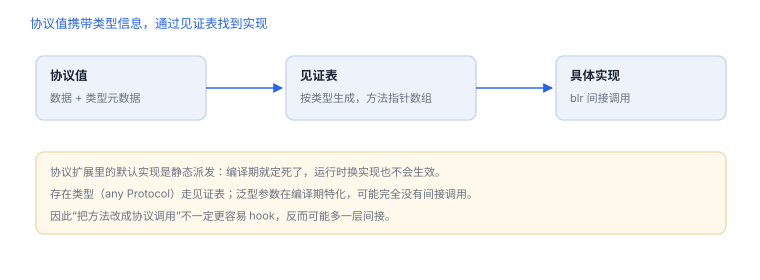

协议、泛型与派发边界
从抽象接口理解静态选择、动态派发和二进制约束
“面向协议”是设计方法，不意味着所有调用都使用同一种运行时派发。Swift 的静态特化、协议见证表、类继承动态派发和 Objective-C 消息派发具有不同语义与成本。
1. 先区分三层：值、协议、类
- 语言语义：源码层保证的行为，如访问控制、泛型约束和协议一致性。
- 派发策略：编译器可能采用静态调用、见证表或类虚表等方式；优化后机器代码可能内联。
- ABI/实现：跨模块调用约定、元数据布局和运行库机制；只有公开承诺的部分才能作为兼容性依赖。
2. 数据细节：existential 与见证表的字节账
| 对象 | 大小（64 位） | 说明 |
|---|---|---|
any P（P 有 class 约束） | 16 字节 | 对象指针 + 见证表指针 |
any P（一般协议） | 40 字节 | 3 字内联缓冲 + 元数据 + 见证表 |
| 见证表每项 | 8 字节 | 一个函数指针，按协议声明顺序排列 |
| 协议描述符 | 变长 | 方法、属性、关联类型的要求列表 |
由此可以推两件事：要求越多，见证表越长，调用点越多一次间接；把值类型装进 any P 时，超过 3 字的内容会装箱到堆上——这就是“协议会带来额外分配”的准确说法，而不是笼统的“协议慢”。
3. 设计取舍：稳定优先于彻底
协议适合描述能力与可替换性；泛型可保留类型关系并支持专门化；类继承适合共享状态或需要动态覆盖的模型。选型应优先依据正确性、可测试性和演进需求，而非猜测某种派发“必然更快”。
Swift：用协议表达可测试的依赖边界
protocol ProfileStore {
func profile(for id: String) async throws -> Profile
}
struct ProfileService {
let store: any ProfileStore
func load(id: String) async throws -> Profile {
try await store.profile(for: id)
}
}生产实现和测试替身遵循同一协议；服务端仍负责判断调用者是否有权读取对应资料，客户端抽象不是安全授权边界。

4. 二进制观察的边界
反汇编结果会受优化级别、whole-module optimization、架构和工具链版本影响。观察一个构建产物只能说明该次构建，不足以推断所有 Swift 版本或未来 ABI。公开接口、稳定 ABI 和私有实现必须分别标注。
5. 实验：让四种派发各出现一次
- 分别用协议、泛型和类继承实现同一个小型格式化器。
- 在 Debug 与 Release 配置下比较行为、可测试性和构建产物。
- 记录编译器、SDK、架构与优化配置，不从单次汇编推导普遍规则。
- 为协议实现替换、错误路径和并发访问编写测试。
6. 四种派发与可 hook 性
| 派发 | 决定因素 | 能否按名字 hook |
|---|---|---|
| 静态 | final、值类型 | 不能 |
| 类虚表 | 可继承类 | 不能 |
| 协议见证 | 协议类型调用 | 不能 |
| 消息发送 | @objc / dynamic | 能 |
找边界而不是找方法
纯 Swift 内部调用最难 hook；把观测点放在网络、存储与 @objc 暴露的入口上，命中率最高。
纯 Swift 内部调用最难 hook；把观测点放在网络、存储与 @objc 暴露的入口上，命中率最高。
7. 协议与泛型的边界
| 场景 | 派发方式 | 观测难度 |
|---|---|---|
| 协议扩展的默认实现 | 静态（编译期确定） | 高：调用点没有间接跳转 |
| 存在类型调用 | 见证表 | 中：可见间接寻址 |
| 泛型特化 | 静态，每类型一份 | 高：符号分裂 |
8. 一次真实排查记录：协议方法 hook 不中
- 现象：协议方法按名字挂不上断点。
- 先看派发：调用方是协议类型还是具体类型，前者走见证表。
- 再看实现：默认实现在协议扩展里，编译期就定了。
- 换点：改挂具体类型的实现，或挂调用方。
- 结论与限制：记录“协议扩展静态派发”，并注明结论只对该调用位置成立。
9. 自测
- 为什么源码层的协议调用不总能直接映射成一种固定派发方式？
- 什么情况下可以把 ABI 细节当作兼容性契约？
- 为什么客户端协议抽象不能承担服务端授权？